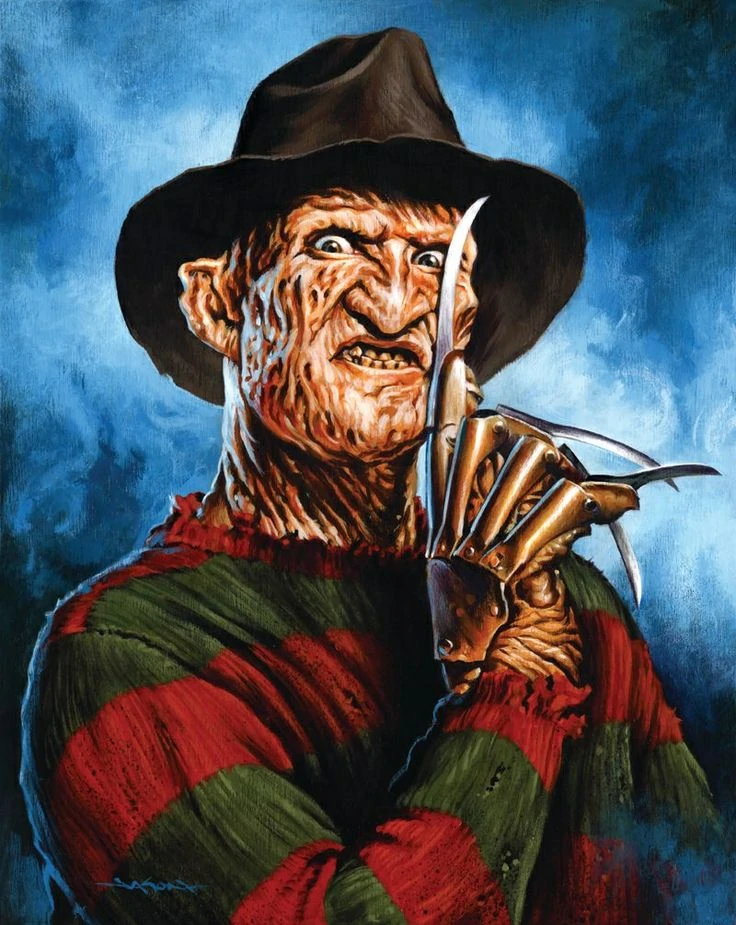
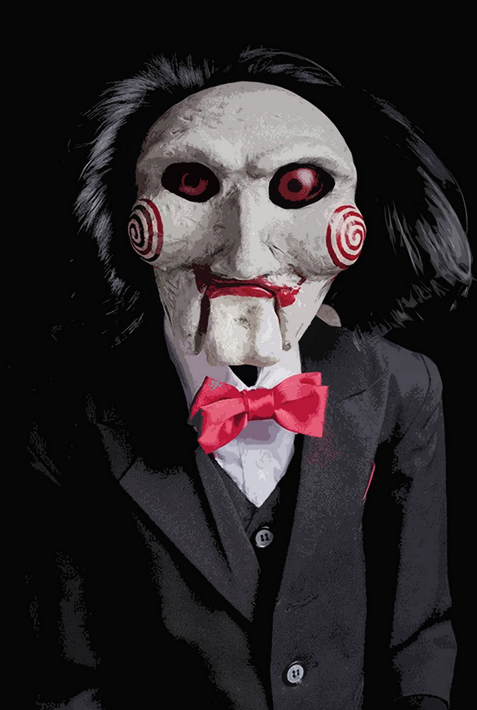

O boneco Chucky é um Good Guy, famoso brinquedo existente no universo da franquia, que contém a alma transferida de um perigoso assassino dentro de si. Fatalmente ferido ao fugir de um policial, o ladrão e assassino Charles Lee Ray.
 Nasceu prematuro, entre setembro e dezembro de 1946, à meia-noite de uma sexta-feira 13. Sua mãe acreditava que ele havia morrido afogado no lago do acampamento Crystal Lake em 1957, aos 11 anos. Ele sobreviveu e se tornou um homem grande, deformado, rude e silencioso.
Nasceu prematuro, entre setembro e dezembro de 1946, à meia-noite de uma sexta-feira 13. Sua mãe acreditava que ele havia morrido afogado no lago do acampamento Crystal Lake em 1957, aos 11 anos. Ele sobreviveu e se tornou um homem grande, deformado, rude e silencioso.
 Myers é retratado como uma criança de seis anos que na noite de Halloween, assassina a sua irmã mais velha, Judith. Depois de ficar institucionalizado num hospital psiquiátrico durante quinze anos, escapa e regressa a casa em Haddonfield, Illinois, para matar mais adolescentes.
Myers é retratado como uma criança de seis anos que na noite de Halloween, assassina a sua irmã mais velha, Judith. Depois de ficar institucionalizado num hospital psiquiátrico durante quinze anos, escapa e regressa a casa em Haddonfield, Illinois, para matar mais adolescentes.

Ghostface é uma identidade fictícia adotada por vários personagens da série de filmes Scream. O personagem é praticamente mudo, mas sua voz é expressa por Roger L. Jackson, independentemente de quem está por trás da máscara.

Slenderman é um personagem fictício sobrenatural que se originou como uma meme da internet criado pelo usuário Eric Knudsen no fórum de discussão Something Awful em 2009. Ele é descrito como semelhante a um homem magro, anormalmente alto, com uma cabeça branca e inexpressiva.

Pennywise é uma criatura sobrenatural metamorfa, que muda de forma, e geralmente aparece na forma de um palhaço para atrair suas presas preferidas: crianças.

Freddy é um assassino de crianças da fictícia Springwood, Ohio, que após ser queimado por pais vingativos passa a atacar adolescentes em seus sonhos, matando-as no mundo real por tabela.
Frank, um pervertido sexual, compra um cubo mágico e abre a porta de uma dimensão cheia de dor e tortura. Quando uma antiga amante se muda para sua casa, ele tenta convencê-la a ajudá-lo a voltar ao mundo dos vivos.
Zé do Caixão seria Josefel Zatanas, que nascera em uma família controladora de uma rede de agências funerárias. Durante a Segunda Guerra Mundial, ele se alistara na Força Expedicionária Brasileira (FEB) e abandonou sua noiva.
E o monstro tem uma origem bem peculiar. Ele foi criado pelo artista H. R. Giger, cujo trabalho combina elementos humanos e tecnológicos, algo meio biomecânico. Mas, também, a arte de Giger é fortemente influenciada por genitálias.

Os filmes da série narram a história de John Kramer/Jigsaw um homem de meia idade, atormentado pelo câncer e por perdas na vida que fazem com que ele perca a fé na humanidade. Após uma tentativa de suicídio mal sucedida ele decide ensinar as pessoas lições de valorização a vida.
A lenda conta que originalmente a boneca amaldiçoada pertencia a uma estudante de enfermagem que, em 1970, começou a notar um estranho “comportamento” por parte do brinquedo, que não só se movia sozinha como escrevia mensagens assustadoras e pedidos de socorro.